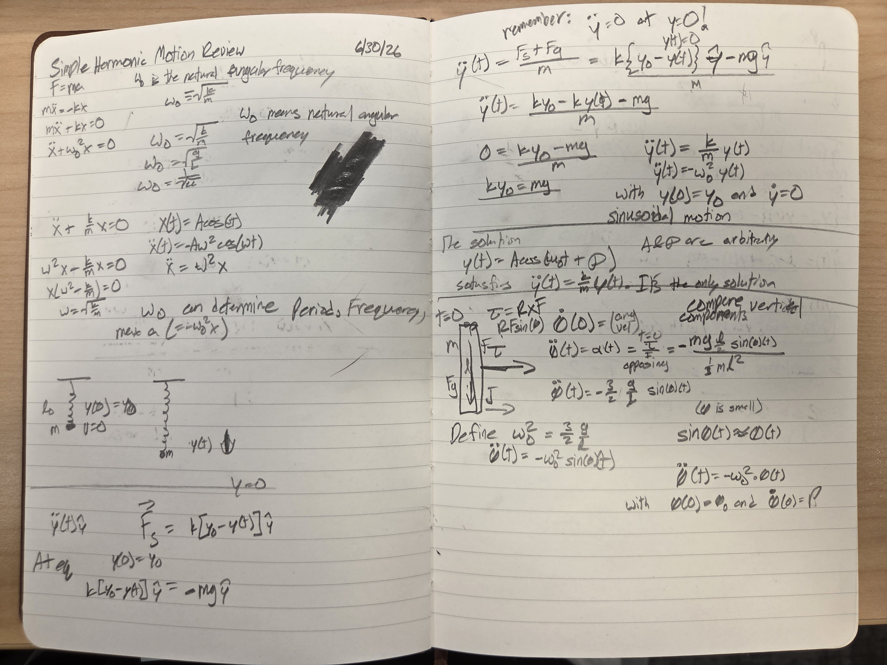
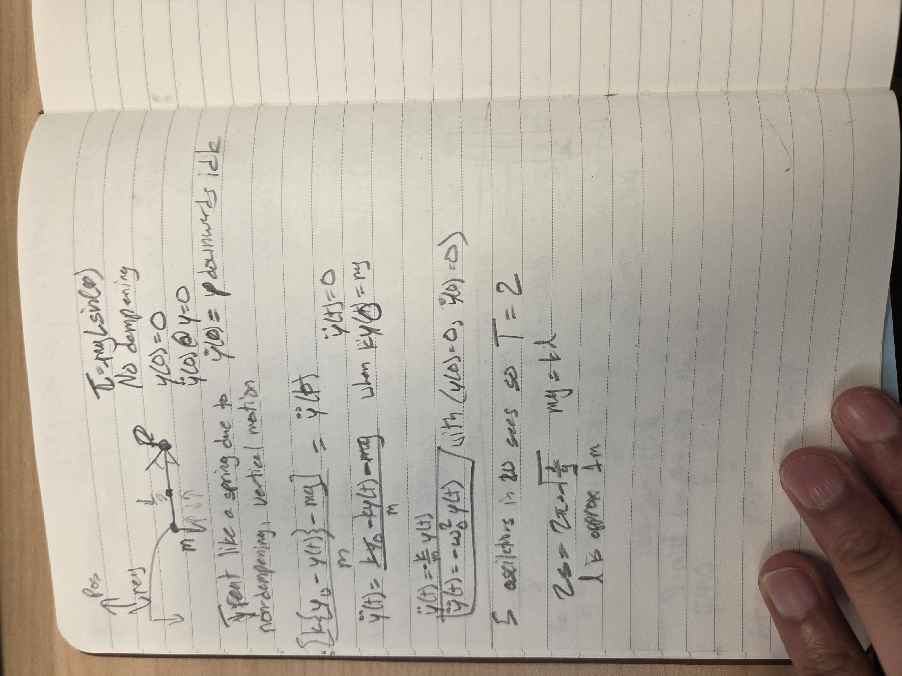
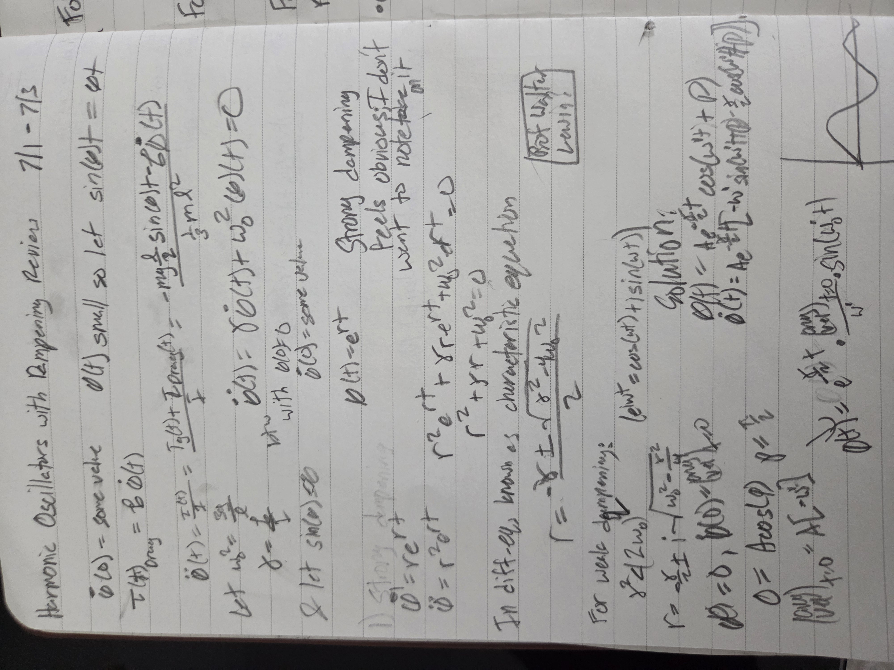
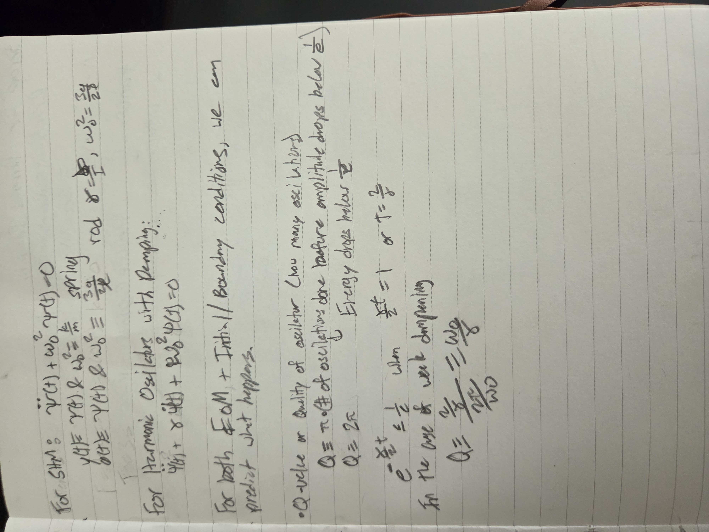

Ven's Notes: Vibrations and Waves Simulation + Notes
I'm aspiring to build my own plasma physics simulations but I realized I can't code really slow and I rely on others' work too much. I thought challenging myself to code harmonic motion would be a good excercise by utilzing MIT OCW's course on Vibrations and Waves Problem Solving. I think it'll help a lot with general fundamentals and speed, and I'll see whether I recommend doing this for training this by the end (which should be at day 10).
Harmonic Oscillators
Boundary value solve: choose x(0), x(T), and T
Weak vs strong damping: choose x(0), v(0), and drag
Driven oscillator: choose force strength and drive frequency
Coupled oscillators: choose two starting positions
Playback
Equation
day 1 / boundary-value SHM notes
Given positions at two times, solve the missing motion constants.
Show SHM boundary-value math
SHM boundary-value notes Use x(t) as displacement from equilibrium. Your handwritten notes sometimes use y(t) for vertical displacement. After shifting the origin to equilibrium, x and y obey the same SHM equation. Hooke + Newton: F = -kx mx'' = -kx x'' = -(k/m)x x'' = -omega0^2 x Natural frequency: omega0 = sqrt(k/m) Vertical spring equilibrium offset: k y0 = mg After measuring from equilibrium, gravity cancels out of the motion equation: y'' = -(k/m)y y'' = -omega0^2 y General solution: x(t) = A cos(omega0 t + phi) At t = 0: x(0) = A cos(phi) v(0) = -A omega0 sin(phi) Boundary-value version: given x(0) = x0 and x(T) = xT The code first solves the missing v0: v0 = omega0(xT - x0 cos(omega0 T)) / sin(omega0 T) Then convert x0 and v0 into lecture-note constants: A = sqrt(x0^2 + (v0/omega0)^2) phi = atan2(-v0/omega0, x0) Final position: x(t) = A cos(omega0 t + phi) Once x(t) is known: v(t) = x'(t) a(t) = x''(t) = -omega0^2 x(t) F(t) = ma(t) = -kx(t) Period: Tperiod = 2pi/omega0 Tperiod = 2pi sqrt(m/k) Singular boundary times: sin(omega0 T) = 0 T = n*pi/omega0 At those times, the boundary target may be impossible or non-unique.
Show raw handwritten notes


day 2 / weak and strong damping notes
Damping can leave a shrinking oscillation or stop oscillation completely.
Show damping math
Damped oscillator notes Start with the mass-spring force plus a drag force proportional to velocity: m x'' = -b x' - kx m x'' + b x' + kx = 0 Divide by m and match the OCW notation: x'' + (b/m)x' + (k/m)x = 0 x'' + gamma x' + omega0^2 x = 0 Definitions: gamma = b / m omega0 = sqrt(k/m) The size of gamma^2 compared to 4 omega0^2 controls the shape: gamma^2 < 4 omega0^2: weak damping The mass still oscillates, but the envelope shrinks like e^(-gamma t/2). gamma^2 = 4 omega0^2: critical damping The mass returns to equilibrium as fast as possible without overshooting. gamma^2 > 4 omega0^2: strong damping The motion is a sum of two decaying exponentials and does not oscillate. For weak damping: omega' = sqrt(omega0^2 - gamma^2/4) x(t) = e^(-gamma t/2)(A cos(omega' t) + B sin(omega' t)) Q ~= omega0 / gamma The simulation solves from: x(0), v(0), m, b, k and draws x(t), v(t), a(t), and the total force: F = -kx - bv
Show raw handwritten notes


day 3 / driven oscillation notes
An oscillator can be forced into a large response near resonance.
Show driven oscillator math
Driven oscillator notes Problem-solving style from the MIT video: 1. Start with an ordinary physical situation. 2. Use the laws of nature to turn it into equations. 3. Solve the math problem. 4. Come back and interpret what the answer says physically. The same math appears in very different systems: RLC circuit driven by AC voltage pendulum with its support shaken sinusoidally seismograph with the ground moving sinusoidally mass-spring oscillator driven by an outside force Generic form: x'' + gamma x' + omega0^2 x = f cos(omega t) For this simulation: m x'' + b x' + kx = F0 cos(omega t) gamma = b / m omega0 = sqrt(k/m) f = F0 / m General shape of the answer: x(t) = A(omega) cos(omega t - delta) + transient transient = C e^(-gamma t/2) cos(omega' t + phi) The transient part depends on the initial conditions. Because of damping, it dies away. The steady-state part stays forever: A(omega) = f / sqrt((omega0^2 - omega^2)^2 + (gamma omega)^2) tan(delta) = gamma omega / (omega0^2 - omega^2) Interpretation: If omega is below omega0, the response is mostly in phase with the driver. If omega is above omega0, the response is mostly out of phase with the driver. Near resonance, the response amplitude becomes large. Damping keeps the resonance finite and makes the peak less sharp.
day 4 / coupled oscillator notes
Two masses can be understood as a mixture of two normal modes.
Show coupled oscillator math
Coupled oscillator notes Setup: wall -- spring k -- mass 1 -- coupling spring kc -- mass 2 -- spring k -- wall No damping and no driving. Equations: m x1'' = -k x1 - kc(x1 - x2) m x2'' = -k x2 - kc(x2 - x1) This looks harder because x1 and x2 affect each other. The trick is to use normal coordinates: q+ = (x1 + x2) / 2 q- = (x1 - x2) / 2 q+ means both masses move together. q- means the masses move opposite ways. After substituting, the equations separate: q+'' + (k/m)q+ = 0 q-'' + ((k + 2kc)/m)q- = 0 Normal mode frequencies: omega_in = sqrt(k/m) omega_out = sqrt((k + 2kc)/m) In-phase mode: x1 = x2, so the middle spring does not stretch. Only the two wall springs matter. Out-of-phase mode: x1 = -x2, so the middle spring stretches extra. That makes the frequency higher. Any starting motion is a superposition: x1 = q+ + q- x2 = q+ - q- When both modes are present, the motion can look like energy moving back and forth between the masses. That is the beat case.